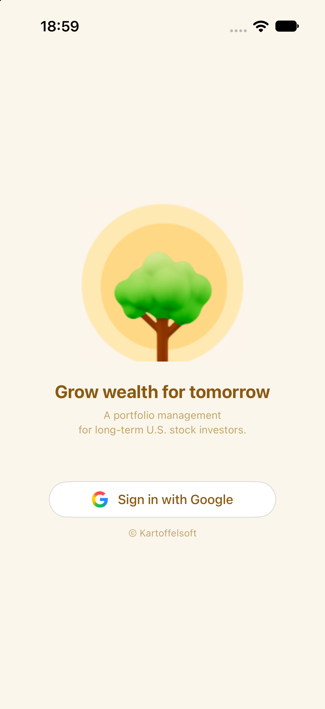
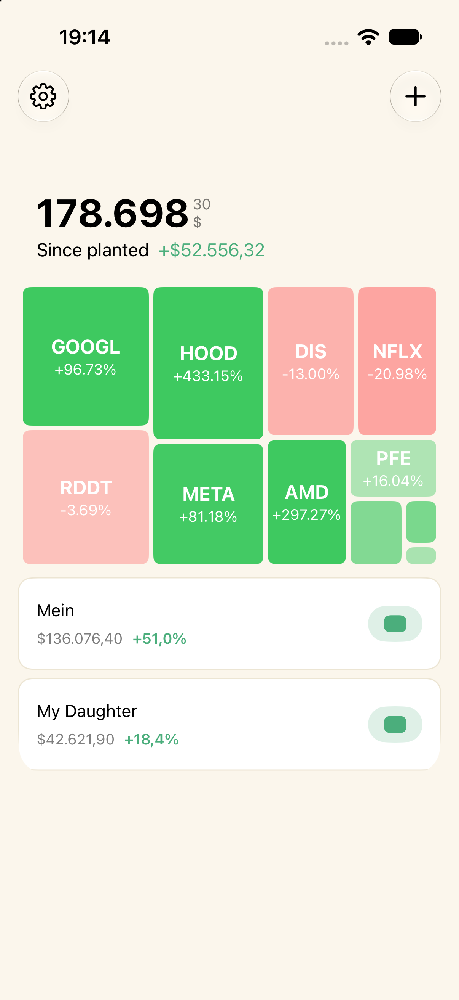
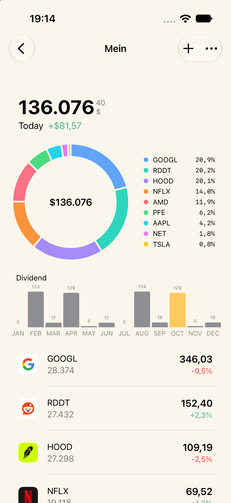
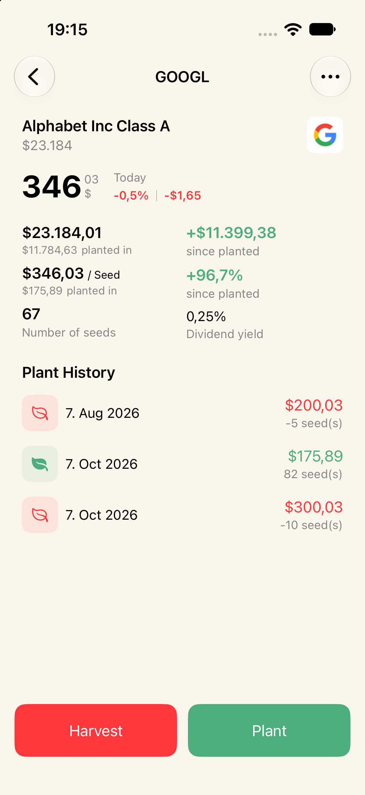

Watch your financial garden grow with complete privacy.
Investing in stocks is like growing a garden. You plant your investments, watch them grow, and care for them over time.
Garden100 is a simple portfolio monitoring app for US stocks. Create your own portfolios, keep an eye on your investments, and enjoy watching your financial garden flourish.
Originally created for family use — one portfolio for me and one for my daughter — it is designed specifically for calm monitoring and learning, rather than active day-trading or buying and selling.
Garden100 uses Google Sheets to store your portfolio information. Your portfolio data stays entirely in your own Google Sheet.
Our servers do not store your portfolio information. We only provide supplementary public market data that makes the app useful, such as dividend histories, company overviews, and ticker search.
🔒 Zero Data Harvesting: We never collect, sell, or store your portfolio data on our servers.
Create a portfolio in Garden100. Your portfolio data is stored and kept securely inside your own personal Google Sheet.
Garden100 reads the data directly from your Google Sheet and presents it in a beautiful, easy-to-use interface, helping you observe your investments over time.
1. Create Portfolio

2. Track Stocks

3. Company Details

4. Watch It Grow

We believe you should remain in complete control of your financial records. Storing your portfolio in your own Google Sheet instead of a proprietary third-party database means:
Garden100's server only supplies publicly available market metadata that is difficult to maintain inside a static spreadsheet:
Your private holdings, share amounts, and balances are never sent to or logged on our server.